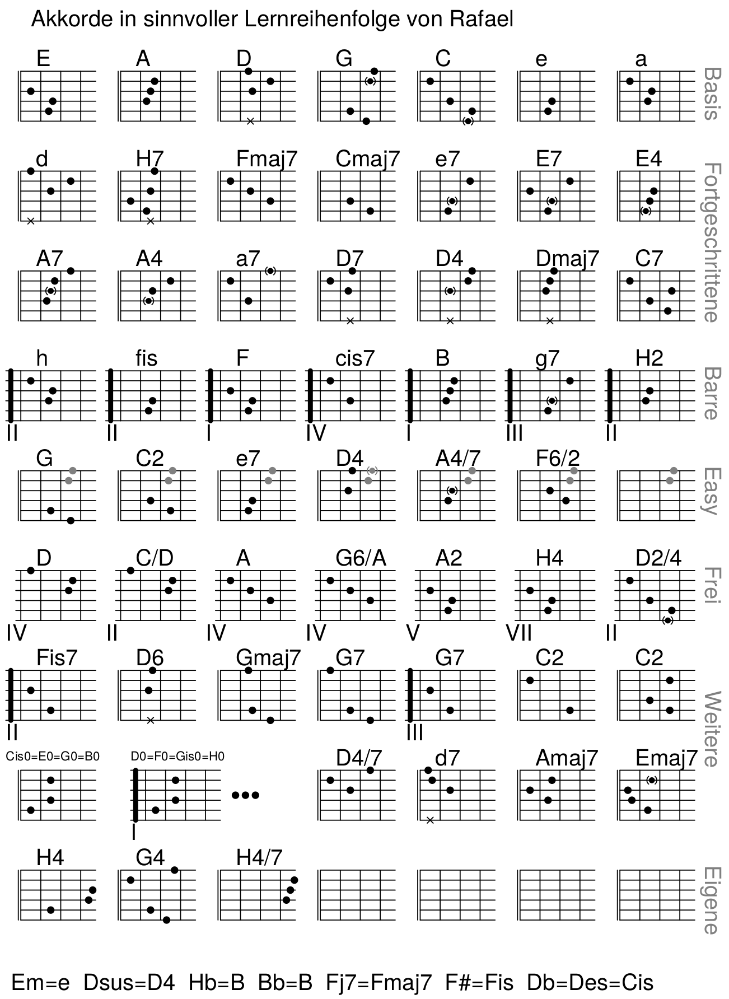
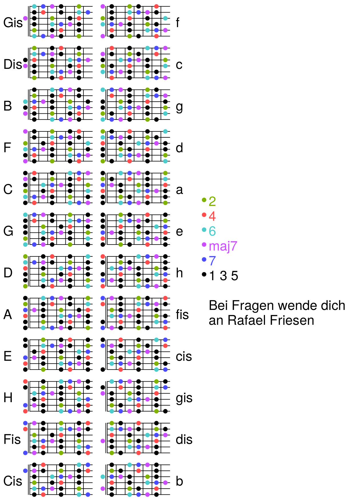
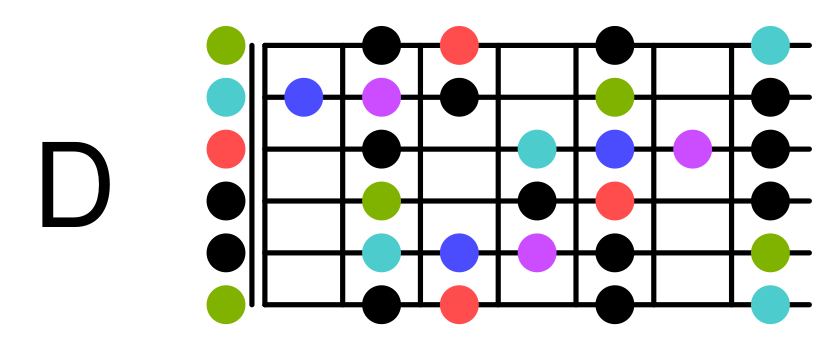
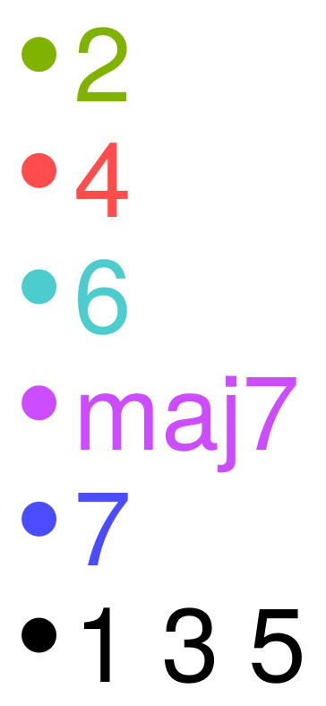

Gitarre & co.
Ich spiele seit etwa Y2K Gitarre. Ich habe es mir selbst und anderen
beigebracht, und dabei Hilfsmittel entwickelt.
Einfache Grifftabelle
Hier ist ein PDF mit einer einfachen Grifftabelle:

Falls du die verändern willst: Hier gibt es die Quelldatei.
Universal-Grifftabelle
Meine Lieblingserfindung ist die Universal-Grifftabelle:

Falls du die verändern willst:
Hier gibt es die Quelldatei.
Schau sie dir einfach mit einem beliebigen Text-Editor an,
ziemlich am Anfang habe ich erklärt, wie du andere Stimmungen einstellst.
Warum?
Es gibt zu viele Bücher à la "Die 1000 wichtigsten Gitarrengriffe".
Darin finden Anfänger dann jeden Akkord 100x und wissen immer noch nicht,
welcher der richtige ist. Wenn man verstanden hat, an welchen Stellen man
für welchen Akkord drücken darf, kann man sich selbst überlegen, welche
Griffe man bequem spielen kann und was sich gut anhört.
Wer?
Von Anfänger bis Profi kann diese Tabelle allen helfen. Man sollte vorher
schon – sagen wir – 5 Griffe spielen können, und kann sich hiermit alle
weiteren beibringen. Wenn man als Profi Variationen sucht, hilft diese
Tabelle immer noch. Besonders praktisch finde ich sie, wenn ich neue
Instrumente oder Stimmungen probieren will (Dann braucht man die .eps-Datei)
Wie?
So sieht z.B. das Muster für den Akkord D-dur aus:

Wie lese ich das?
Der unterste Strich ist die Tiefe E-Saite, der oberste Strich ist die hohe E-Saite.
Die Punkte links vom Doppelstrich bedeuten: Die Saite schwingt leer, wird also nicht gedrückt.
Wie drücke ich einen Akkord?
Überall, wo ein Schwarzer Punkt ist, darfst du drücken.
Jede Saite sollte entweder an einem Schwarzen punkt gedrückt werden oder ganz links einen schwarzen Punkt haben.
Was sollen die bunten Punkte?
Wenn du eine Variation spielen willst, suchst du dir die passende Farbe aus der Legende:

Die Punkte dieser Farbe kannst du zusätzlich zu den schwarzen Punkte drücken.
Um z.B. D4 zu spielen, darfst du schwarze und rote Punkte drücken.
Damit es wirklich D4 ist, sollte mindestens ein roter Punkt dabei sein.
Man kann auch kombinieren: Für z.B. D4/7 drücke Schwarz, Rot und Blau.